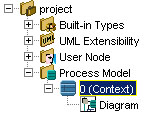

Adding a context

To add a context to a process model, you must first select the process model in the explorer window...
- From the main menu: choose Edit > Add > Context.
- From the explorer window: right-click the process model. Then, from the pop-up menu, choose Add > Context.
- From the Edit toolbar: click the Add tool
 and choose Context.
and choose Context.

A context is dealt with like the first process of a model. Therefore, it is by
default attributed the number 0.
To change the “Context”
name that is automatically
assigned by the software,
use the description window
of the root process. A name
change for this process will
immediately affect the title
bar of its graphic window.